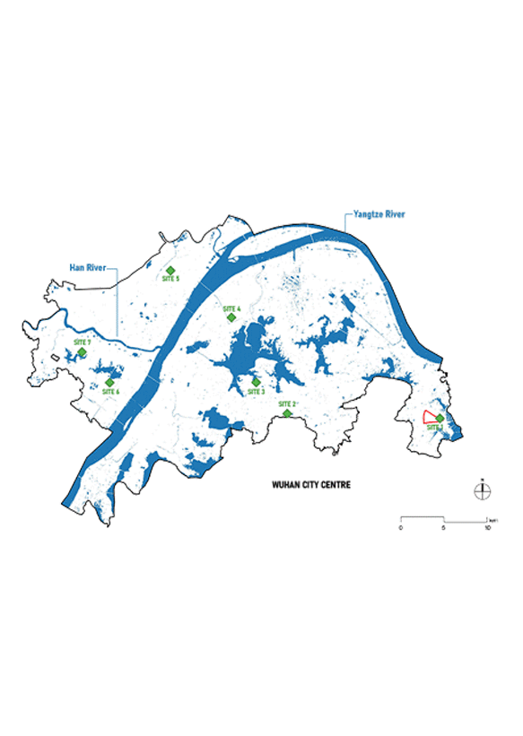
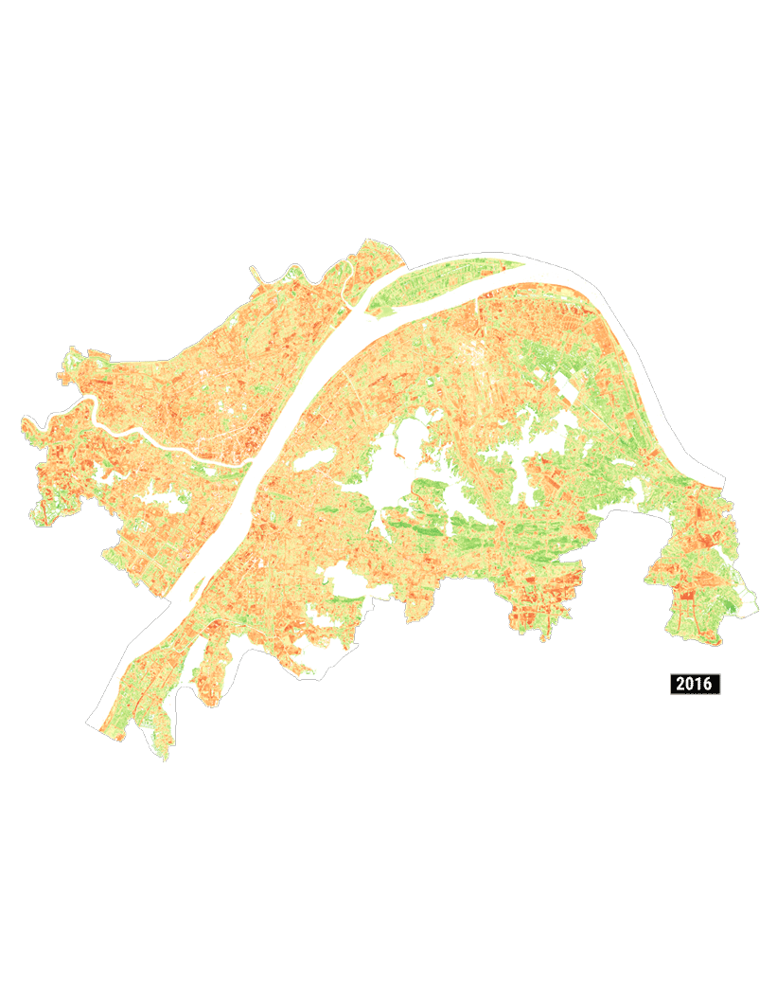
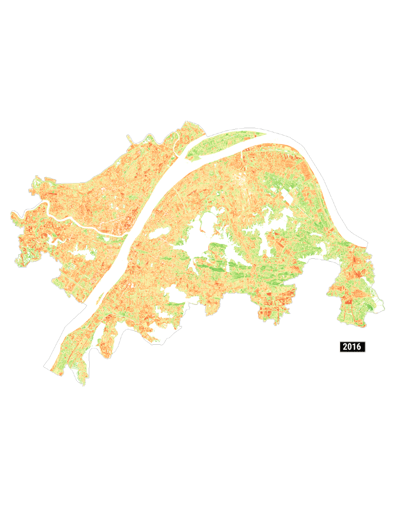

 


{kind=link}
Sampling Sites for Classifier Training
Supervised Machine Learning Land Cover Classification (LCC)
Training AI to recognize land cover types through analysis of remote sensing hyperspectral data
The key to the successful classification of urban homesteads within this study was the identification of the volatile spatiotemporal character of urban homesteads. Being small in scale and spectrally congruent to urban parkland and rural farmland, urban homesteads are difficult to detect through machine learning land cover classification of the 10m Sentinel-2 hyperspectral data used in this study. To provide the machine learning classifier with the information to identify sites of frequent land cover changes, two multitemporal bands were added to the training data: BSI_Mean, which provides an average of the Base Soil Index calculated from Sentinel-2 data prior to the year of study, where higher values indicate areas of more intensive demolitions; and Tsinghua University’s FROM-GLC Year of Change to Impervious Surface (YCIS) dataset catalogues the year any particular site transitioned from pervious land to impervious land.

{kind=link}

Urban homesteading sites identified through supervised machine learning land cover classification.